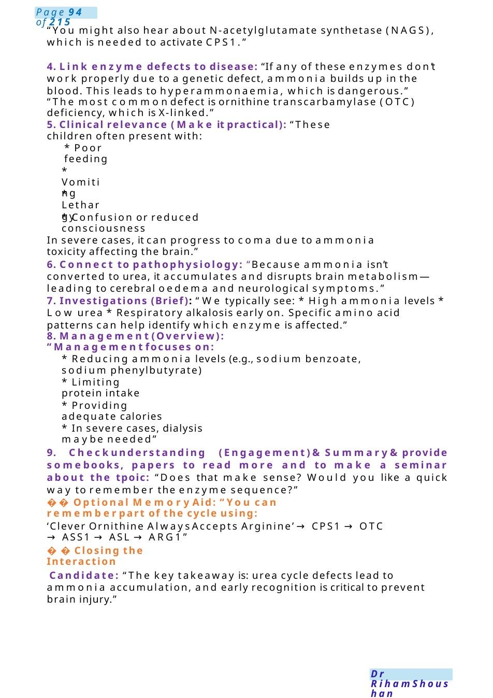
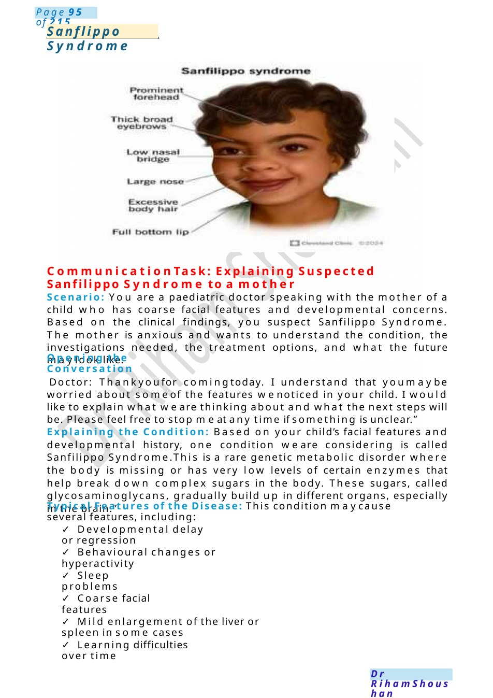

Urea Cycle Defect &Transfer to Tertiary Centre
Communication Scenario: Teaching a Medical Student – Urea Cycle Defect Setting: Paediatric ward teaching round Student: “I heard this child has a urea cycle disorder. I find it confusing—could you explain it to me?”
Scenario Summary
Communication Scenario: Teaching a Medical Student – Urea Cycle Defect Setting: Paediatric ward teaching round Student: “I heard this child has a urea cycle disorder. I find it confusing—could you explain it to me?”
Full Original Scenario

Urea Cycle Defect &Transfer to Tertiary Centre
Communication Scenario: Teaching a Medical Student – Urea Cycle Defect Setting: Paediatric ward teaching round
Characters:
Candidate (You): Paediatric registrar
Medical Student: Final-year student
Scenario Begins
Student: “I heard this child has a urea cycle disorder. I find it confusing—could you explain it to me?”
Candidate Explanation (Structured Teaching Approach) “Sure. Before I explain, what do you knowabout ammonia metabolism?”
“The urea cycle is the body’s wayof getting rid of ammonia, which is toxic—especially to the brain. It mainly happens in the liver, where ammonia is converted into urea and then excreted in urine.”
3. Introduce key enzymes (Stepwise and clear):
“There are several important enzymes involved in the urea cycle. The main ones you should remember are:”
- Carbamoyl phosphate synthetase I (CPS1)
- Ornithine transcarboxylase (OTC)
- Arginosuccinate synthetase (ASS1)
- Arginosuccinate lyase (ASL)
- Arginase (ARG1)

“You might also hear about N-acetylglutamate synthetase (NAGS), which is needed to activate CPS1.”
4. Link enzyme defects to disease: “If any of these enzymes don’t work properly due to a genetic defect, ammonia builds up in the blood. This leads to hyperammonaemia, which is dangerous.”
“The most commondefect is ornithine transcarbamylase (OTC) deficiency, which is X-linked.”
5. Clinical relevance (Make it practical): “These children often present with:
- Poor feeding
- Vomiting
- Lethargy
- Confusion or reduced consciousness
In severe cases, it can progress to coma due to ammonia toxicity affecting the brain.”
6. Connect to pathophysiology: “Because ammonia isn’t converted to urea, it accumulates and disrupts brain metabolism—leading to cerebral oedema and neurological symptoms.”
7. Investigations (Brief): “We typically see: * High ammonia levels * Low urea * Respiratory alkalosis early on. Specific amino acid patterns can help identify which enzyme is affected.”
8. Management(Overview): “Managementfocuses on:
- Reducing ammonia levels (e.g., sodium benzoate, sodium phenylbutyrate)
- Limiting protein intake
- Providing adequate calories
- In severe cases, dialysis maybe needed”
9. Checkunderstanding (Engagement)&Summary&provide somebooks, papers to read more and to make a seminar about the tpoic: “Does that make sense? Would you like a quick way to remember the enzyme sequence?”
Optional Memory Aid: “You can rememberpart of the cycle using:
‘Clever Ornithine Always Accepts Arginine’ →CPS1 →OTC →ASS1 →ASL →ARG1”
Closing the Interaction
Candidate: “The key takeaway is: urea cycle defects lead to ammonia accumulation, and early recognition is critical to prevent brain injury.”

Sanflippo Syndrome
Communication Task: Explaining Suspected Sanfilippo Syndrome to a mother
Scenario: You are a paediatric doctor speaking with the mother of a child who has coarse facial features and developmental concerns. Based on the clinical findings, you suspect Sanfilippo Syndrome. The mother is anxious and wants to understand the condition, the investigations needed, the treatment options, and what the future maylook like.
Opening the Conversation
Doctor: Thankyoufor comingtoday. I understand that youmaybe worried about someof the features wenoticed in your child. I would like to explain what we are thinking about and what the next steps will be. Please feel free to stop meat any time if something is unclear.”
Explaining the Condition: Based on your child’s facial features and developmental history, one condition we are considering is called Sanfilippo Syndrome.This is a rare genetic metabolic disorder where the body is missing or has very low levels of certain enzymes that help break down complex sugars in the body. These sugars, called glycosaminoglycans, gradually build up in different organs, especially in the brain.”
Typical Features of the Disease: This condition maycause several features, including:
- Developmental delay or regression
- Behavioural changes or hyperactivity
- Sleep problems
- Coarse facial features
- Mild enlargement of the liver or spleen in some cases
- Learning difficulties over time